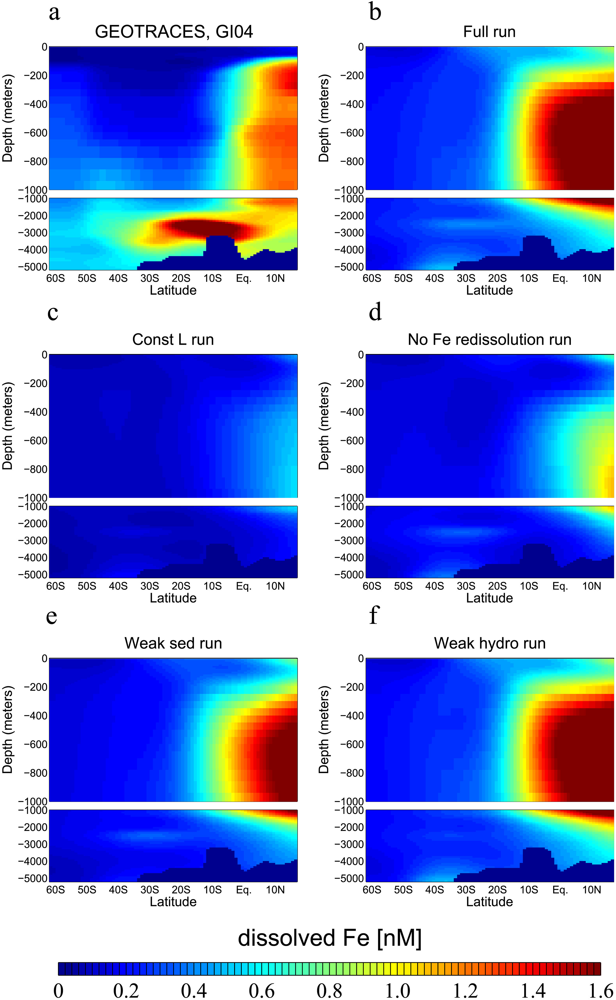
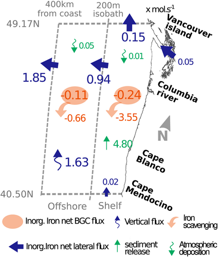

Anh Le-Duy Pham, Ph.D.
Chemical Oceanographer & Marine Biogeochemist
My research combines observations, numerical models, and data synthesis to investigate chemical and biogeochemical processes controlling trace-metal cycling, marine carbon cycling, and marine ecosystems. I am also interested in marine carbon dioxide removal (mCDR), including how ocean biogeochemical processes and ecosystem responses influence the effectiveness, durability, and environmental consequences of ocean-based carbon removal approaches.

I investigate redox chemistry, organic ligand binding, scavenging, sedimentary iron inputs, particle dynamics, and biological uptake.

I investigate how sedimentary inputs, particle dynamics, redox chemistry, organic ligands, and ocean circulation regulate the transport of iron from continental margins to the open ocean.
I combine regional ocean modeling and observations to investigate physical and biogeochemical processes controlling iron distributions and marine productivity along the U.S. West Coast.
I investigate how iron availability and recycling influence heterotrophic bacteria, zooplankton, phytoplankton, and higher trophic levels, with implications for marine ecosystem structure and productivity.
I evaluate ocean biogeochemical models using observations and large-scale data synthesis, including comparisons with GEOTRACES observations, to assess how model representations of iron chemistry and cycling influence simulated ocean biogeochemistry.
I am interested in using ocean biogeochemical models to investigate marine carbon dioxide removal approaches, including ocean iron fertilization, and to evaluate how carbon export, ocean circulation, and ecosystem responses affect carbon removal and storage.
See my co-authored perspective: Next steps for assessing ocean iron fertilization for marine carbon dioxide removal .
I investigate interactions between trace-metal cycling, marine carbon cycling, benthic-pelagic coupling, and climate feedbacks, including how biological production and particle transport regulate the ocean carbon cycle.
NSF OCE-2343357 (2024–2027)
“Iron Protection, Removal, and Transport along Anoxic Margins
and Impacts on the Open Ocean.”
Pending NSF Collaborative Research
“Factors controlling iron distribution on the Southern Oregon
shelf.” Co-Principal Investigator with Daniele Bianchi,
James Moffett, and Kristen Buck.